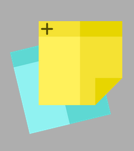
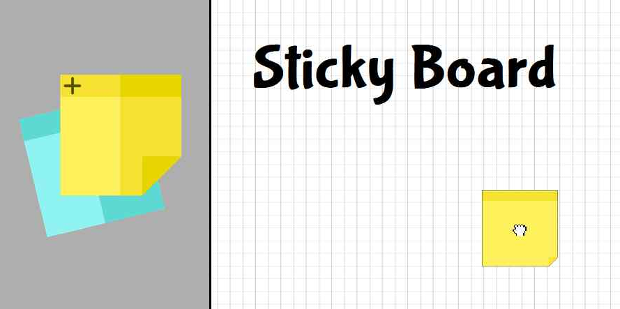
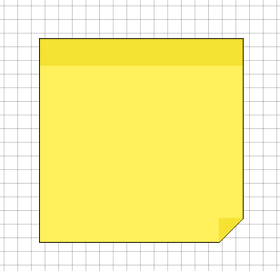
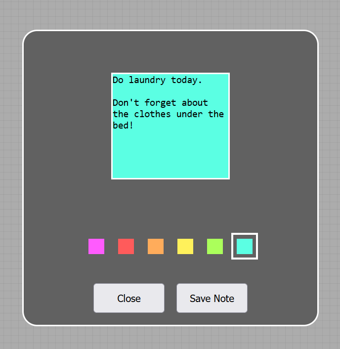
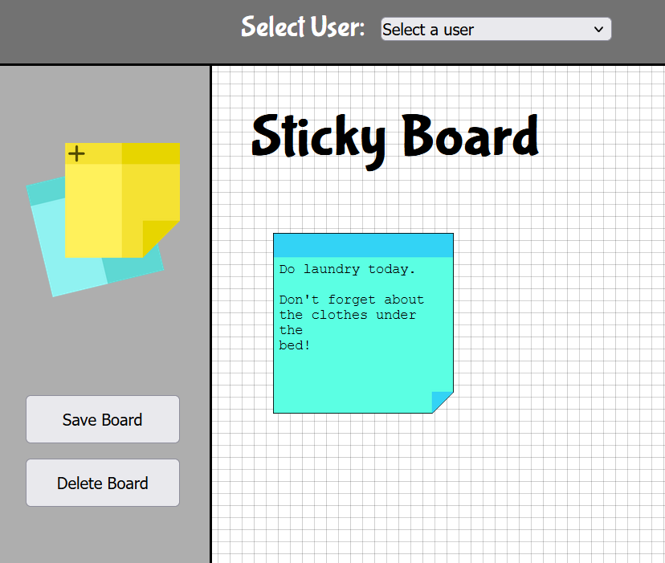
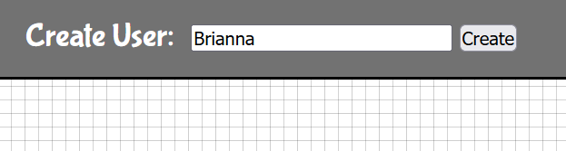
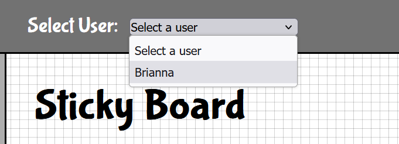
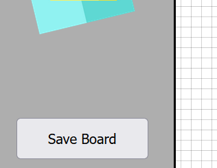

How to use Sticky Note
Non-persistent route:
- Drag and drop the new sticky icon onto the Sticky Board.


- To open the sticky editor, double click on the newly created sticky.

- Once inside the editor, input the text that you wish and select a color for the sticky note.

- Click the "Save Note" button to save the sticky note and to return back to the sticky board.

Persistent route:
- Create a new user by typing in your desired username in the top of the window. Then click "Create".

- If you already have created an account, simply select your username from the dropdown menu. Your sticky
board will be automatically populated.

- Drag and drop the new sticky icon onto the Sticky Board.
- To open the sticky editor, double click on the newly created sticky.
- Once inside the editor, input the text that you wish and select a color for the sticky note.
- Click the "Save Note" button to save the sticky note and to return back to the sticky board.
- Lastly, click the "Save Board" button on the left sidebar when you are done editing your board.

Sidebar and webpage icon created by: Freepik -
Flaticon